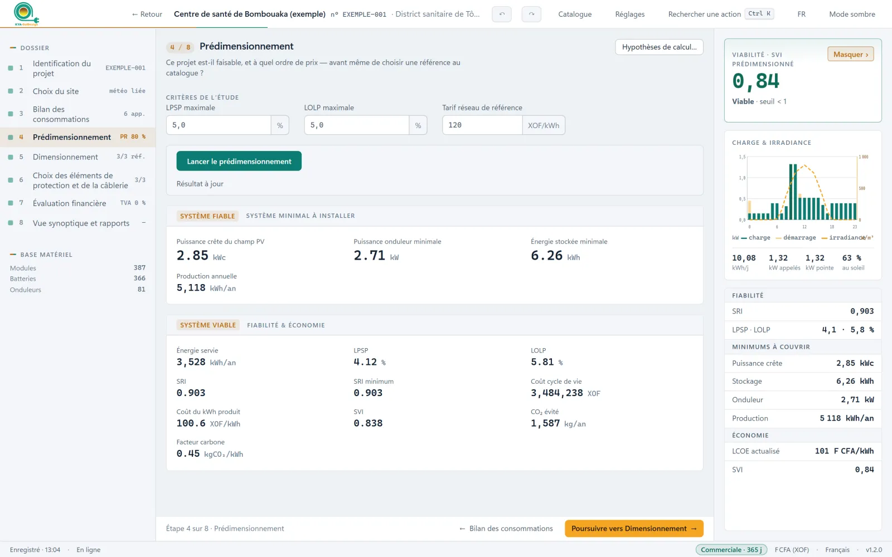
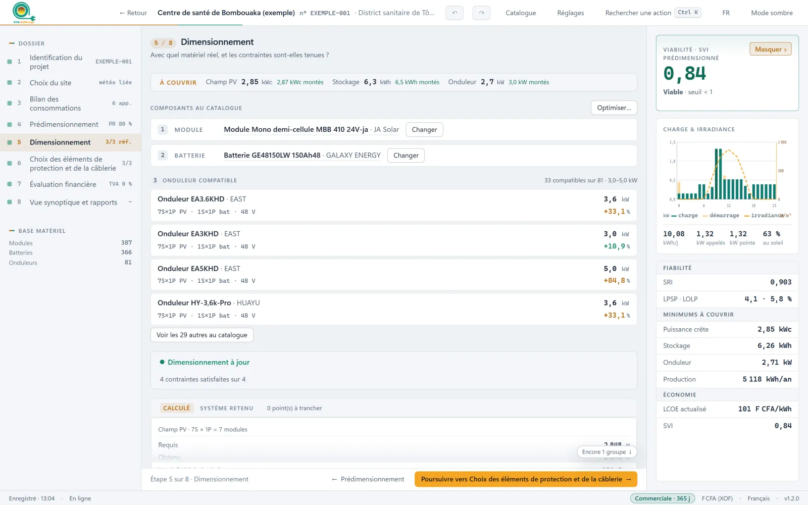

Le système couvrira-t-il les besoins, sans coupure, toute l'année ?
0,90
Projet exemple : un système fiable toute l'année.
Comment le lire : plus il est proche de 1, plus le système est fiable.
KYA-SolDesign dimensionne les installations photovoltaïques autonomes en tenant compte, en même temps, de la fiabilité du service et de son coût pour l'utilisateur final.

Avant de bâtir, deux questions. KYA-SolDesign y répond avec la météo réelle du site, heure par heure, sur toute l'année.
Le système couvrira-t-il les besoins, sans coupure, toute l'année ?
Projet exemple : un système fiable toute l'année.
Comment le lire : plus il est proche de 1, plus le système est fiable.
L'énergie produite sera-t-elle abordable face au tarif du réseau ?
Projet exemple : un kWh moins cher que celui du réseau.
Comment le lire : en dessous de 1, l'énergie produite coûte moins cher que celle du réseau.



Une licence par poste, ou plusieurs postes pour une équipe ou une classe.
Bureaux d'études, installateurs, développeurs de projets, institutions.
— FCFA / an prix à fournir
Établissements d'enseignement et de recherche.
— FCFA / an prix à fournir
Pour apprendre sur des projets réels.
— FCFA / mois prix à fournir
Pas encore décidé ? Activez l'essai gratuit depuis votre compte.
Essayer gratuitement